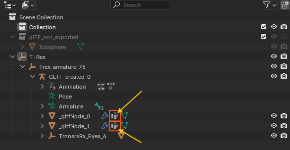

Asset Compatibility and Workarounds
Overview
This document covers assets that work well with the glTF/GLB Importer for Maya and provides practical solutions for common import challenges.
What Works Well
- Standard glTF 2.0 Compliant Files: Assets that follow the Khronos glTF 2.0 specifications import reliably
- Geometry and Materials: Meshes, PBR materials, and textures import correctly
- Animations: Transform animations, skeletal (rigged) animations, and blendshape animations are fully supported
- Standard Exporters: Files from widely-used glTF exporters (Blender, Maya/Babylon, etc.) are well-supported
Recommended Workarounds
For Sketchfab Assets with Rigged Animations
If you experience deformation accuracy issues with auto-generated Sketchfab assets:
- Enable Use Exact Inverse Bind Matrices: In the import options under Geometry Options, enable Use Exact Inverse Bind Matrices (only available when Import Skin Binding is enabled)
- Import the Asset: This option uses the exact inverse bind matrices from the glTF/GLB file, providing more accurate skeletal deformation that matches the original file's joint transformations
- If Issues Persist: Disable the option to let Maya recalculate bind matrices automatically
Note: Most users should leave this option disabled unless importing auto-generated assets with deformation accuracy issues from platforms like Sketchfab that may have non-standard bind pose configurations.
Alternative Blender Preprocessing Workflow
If the above doesn't resolve the issue, use this Blender preprocessing workflow:
- Import into Blender: Import the original Sketchfab glTF/GLB file into Blender
- Select Rigged Meshes: In the Outliner, select all meshes that have skin weights applied (identify these by looking for Vertex Groups in the mesh properties) 
- Clear Parent Relationship: Press
Alt + Pand choose "Clear and Keep Transformation" - Re-export: Export the file in glTF/GLB format from Blender
- Import into Maya: The processed file should now import correctly into Maya
Alternative Sketchfab Workarounds:
-
Manual Orientation Correction: Manually adjust object transforms after import
-
Re-rigging: Consider re-rigging complex characters in Maya after import
-
Animation Recreation: For critical animations, recreate keyframes manually in Maya
General Best Practices
-
Test Import: Always test import with a simple version of your asset first
-
Backup Projects: Maintain backups of your Maya scenes before importing complex assets
-
File Validation: Use glTF validators to check file integrity before import
-
Alternative Sources: When possible, obtain assets from sources that use standard glTF exporters
-
Asset Preparation: For complex assets, consider simplifying or optimizing them before import
Round-trip Workflow: Re-exporting Imported Assets
When importing glTF/GLB files and then wanting to export them again using the Babylon exporter, several compatibility issues arise:
Known Export Issues
Material Compatibility Problems:
- Shader Type Conflicts: If you selected Standard Surface, Arnold, or OpenPBR when importing files, the Babylon exporter won't process these materials properly
- The importer uses aiImage nodes and intermediate conversion nodes
-
Babylon only accepts normal file nodes without intermediate conversion nodes
-
Limited Material Support: Babylon doesn't support additional material properties except Clear Coat when using Standard and Arnold shaders. Stingray shader doesn't support glTF extensions. Babylon doesn't have support for OpenPBR
-
Animation Clip Issues: If imported files have animation clips, the importer adds them to the Time Editor, but Babylon doesn't work with Time Editor
Recommended Round-trip Workflow
For Basic Material Export: - Import Setting: Choose Stingray shader when importing the file to maintain Babylon compatibility - This provides basic material properties that Babylon can process correctly
For Assets with Animation Clips: If your asset has animation clips and you need to re-export, follow these steps:
- Consolidate Animation Tracks:
- Arrange all clips from different tracks into one single track with appropriate time offsets in the time editor window
-
You can access the Time Editor via Windows > Animation Editors > Time Editor
-
Select All Related Objects:
-
In the Outliner, select all node items related to the asset including:
- Empty transform groups
- Joints
- Meshes
- Any other related nodes
-
Bake Animation Data:
- In the Time Editor's bake dropdown menu, choose "Bake to Scene and Delete" option
-
This converts Time Editor clips back to standard Maya animation curves
-
Create Animation Groups:
- Using Babylon's Animation Groups UI, create the clips with proper naming
- Export the glTF/GLB file using Babylon exporter
Important: This round-trip workflow is primarily intended for basic material properties and simple animations. Complex materials and advanced features may not survive the round-trip process.
Troubleshooting Tips
Asset Source Recommendations
- Recommended: Use assets from the Khronos Sample Assets repository for testing
- Reliable: Assets exported from Maya using Babylon exporter or Assets exported from Blender using the built-in glTF 2.0 addon
- Caution: Sketchfab auto-generated assets may require preprocessing
Export Guidelines
- Ensure your glTF files follow the official Khronos glTF 2.0 specifications
- Use standard export tools and avoid custom or experimental exporters
- Test your exported files with glTF validators before importing to Maya
- Keep animations simple and prefer transform-based over joint-based animations when possible
Additional Resources
- Khronos glTF Sample Assets - Official test assets
- glTF Validator - Online validation tool
- glTF 2.0 Specification - Official documentation
- Babylon.js Exporter for Maya - Maya export workflow